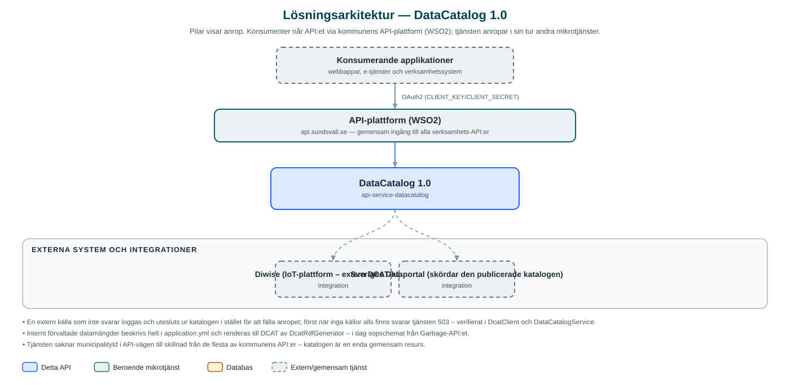

DataCatalog
Aggregerar kommunens öppna data-metadata till en samlad DCAT-AP-SE-katalog som skördas av Sveriges Dataportal.
Om API:et
DataCatalog är kommunens metadatakatalog för öppna data. Tjänsten samlar ihop DCAT-AP-SE-beskrivningar av kommunens datamängder från flera källor och slår samman dem till en enda katalog i RDF/XML-format, som Sveriges Dataportal (dataportal.se) skördar för att göra kommunens öppna data hittbara nationellt.
Katalogen byggs från två håll: dels hämtas färdiga DCAT-kataloger från konfigurerade externa källor (i dag IoT-plattformen Diwise), dels genererar tjänsten själv DCAT-metadata för internt förvaltade datamängder som beskrivs direkt i konfigurationen – till exempel sopschemat som exponeras via kommunens Garbage-API.
Vid sammanslagningen dedupliceras utgivare mot kommunens kanoniska utgivarpost och alla dataset samlas under en gemensam dcat:Catalog. Externa källor cachas en konfigurerbar tid, och en källa som inte svarar utesluts ur katalogen i stället för att fälla hela anropet.
Det här gör API:et
- Samlad DCAT-katalog – GET /datasets/dcat returnerar hela kommunens öppna data-katalog som DCAT-AP-SE i RDF/XML.
- Aggregering från externa källor – Färdiga DCAT-kataloger hämtas från konfigurerade källor, i dag IoT-plattformen Diwise.
- Egen metadatagenerering – DCAT-metadata för internt förvaltade datamängder (t.ex. sopschemat via Garbage-API:et) genereras ur konfigurationen.
- Sammanslagning med deduplicering – Alla källor slås ihop till en dcat:Catalog och utgivare dedupliceras mot kommunens kanoniska utgivarpost.
- Cachning och feltålighet – Externa källor cachas (standard en timme) och en källa som inte svarar utesluts i stället för att fälla anropet.
API-dokumentation
Ingen incheckad OpenAPI-specifikation hittades i källkodsförrådet; se källkoden för aktuell API-dokumentation.
Teknisk dokumentation
Nedan beskrivs hur tjänsten är uppbyggd, vilka andra tjänster den anropar och vad som krävs för att driftsätta den. Informationen är härledd ur källkoden och dess konfiguration på GitHub.
Arkitektur

API:et är en mikrotjänst (Java 25, Spring Boot via kommunens gemensamma tjänsteplattform dept44 (8.0.5), byggd med Maven). Konsumenter når tjänsten via kommunens gemensamma API-plattform (WSO2) på api.sundsvall.se – tjänsten anropas aldrig direkt. Övriga integrationer som förekommer i koden: Diwise (IoT-plattform – extern DCAT-källa), Sveriges Dataportal (skördar den publicerade katalogen).
Teknikstack
- Språk: Java 25
- Ramverk: Spring Boot via kommunens gemensamma tjänsteplattform dept44 (8.0.5), byggd med Maven
- Övrigt: Egen RDF/XML-hantering (parsning, generering och sammanslagning av DCAT-element), RestClient för källhämtning
Beroenden till andra mikrotjänster
Inga anrop till andra mikrotjänster hittades i källkodens konfiguration.
Konfiguration och driftsättning
- integration.dcat.rdf-sources – lista över externa DCAT-källor med namn och URL
- integration.dcat.catalog – kommunens katalogmetadata (titlar, utgivare, kontaktuppgifter) och internt förvaltade dataset beskrivs direkt i application.yml
- integration.dcat.cache-duration styr hur länge externa källor cachas (standard PT1H)
- Ingen databas och inga OAuth2-integrationer – tjänsten är en ren läsande aggregator
Noterbart ur källkoden
- En extern källa som inte svarar loggas och utesluts ur katalogen i stället för att fälla anropet; först när inga källor alls finns svarar tjänsten 503 – verifierat i DcatClient och DataCatalogService.
- Internt förvaltade datamängder beskrivs helt i application.yml och renderas till DCAT av DcatRdfGenerator – i dag sopschemat från Garbage-API:et.
- Tjänsten saknar municipalityId i API-vägen till skillnad från de flesta av kommunens API:er – katalogen är en enda gemensam resurs.
- Repot innehåller ingen incheckad OpenAPI-specifikation (ingen openapi.yml under integrationstesterna); API:et består av en enda GET-endpoint.
Källkod
Källkoden är öppen och finns hos Sundsvalls kommun på GitHub. I källkodsförrådet finns även instruktioner för att klona, konfigurera och starta tjänsten i egen miljö.